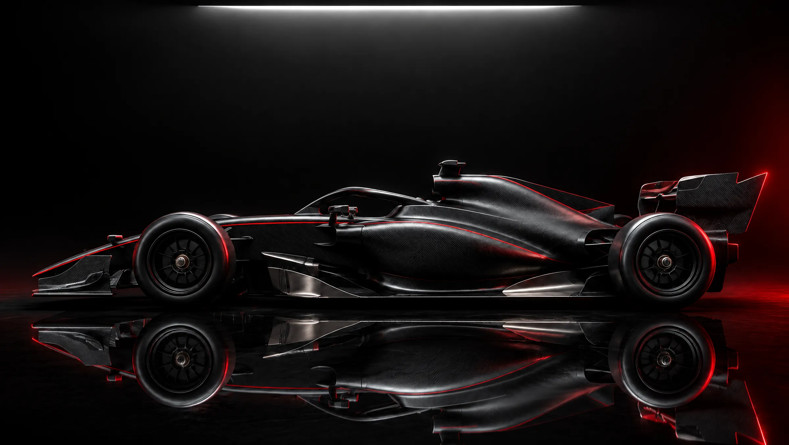

Guia · como funciona
Anatomia de um carro de Fórmula 1
Toque nos pontos vermelhos e descubra o que cada peça faz. Tudo explicado em poucas palavras.

Toque nos números
Imagem gerada, sem equipe, marca ou patrocinador real. Números aproximados, com as regras de 2026.